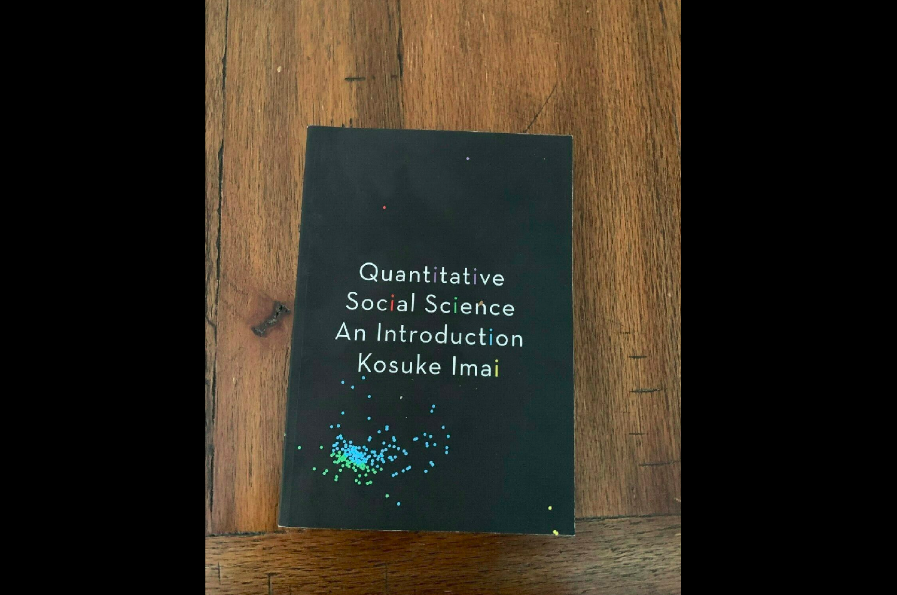

Hi, I'm Sudenur. I'm a highly analytical person who enjoys gaining insights from complex datasets.
My curiosity about programming in the early years of university developed into a passion. Particularly,
discovering data analysis and science has redirected my career. Since then, I have been self-educating.
My high motivation and curiosity have helped me stay disciplined and committed to this self-learning
journey. As a benefit of being self-taught, I am equipped with the necessary skills to keep myself
up-to-date in this dynamic field. I learn things quickly and am eager to grow further with
the company I work for. I am passionate about open-source software and sharing my knowledge with
the community and my teammates. Additionally, I possess the soft skills needed to work in
interdisciplinary departments and to effectively present my work.
Additionally, studying International Relations was a festival for my versatile intelligence.
I loved studying International Relations because of it is being interdisciplinary and giving me a worldview.
Unlike many people, the lack of a specific job description in this department made me feel free and, therefore, happy.
Projects
Python Projects

QSS Exercises in Python
The end of chapter exercises of QSS book by Kosuke Imai were solved and published for the first time in python.
Each exercise is like a whole project by itself and in total there are 18 exercises. Reading the book and solving all the exercises
gave me a solid foundation from causality to measurement, from prediction to probability, from working with numeric data to spatial data, and many more.

Coffee Distribution
In this project variety of variables in coffee distribution data was analyzed.
Titanic
The steps for a machine learning project in Hands-on Machine Learning book by Aurélien Géron was applied to titanic dataset.
However, it resulted in a personal project as the project was uniquely structured by me.
SQL-Tableau Projects
Technical Skills
Python frameworks: Pandas, Numpy, Matplotlib, Seaborn, Geopandas, Sci-kit Learn /
SQL / Tableau / MS Office
Relevant Experiences
Inline List with Bullet Points
- SICSS (Summer Institute in Computational Social Sciences) - Istanbul 2023 [ 19/06/2023 –
15/07/2023 ]
Participant
Koç, Boğaziçi, Sabancı and Özyeğin Universities' partnership.
The instructional program includes advance-level lectures in computational social sciences,
group problem sets, and participant-led research projects.
Istanbul, Türkiye
https://sicss.io/2023/istanbul/
- Data Science for Public Good Bootcamp [ 29/07/2021 – 29/10/2021 ]
Student
CADS@TEDU-Center for Applied Data Science&Kodluyoruz partnership
I studied here for 3 months in an interdisciplinary environment with an intensive coding program.
Finishing project: Impact assessment project carried out by a team of five people from different
disciplines with the anonymous data of Deep Poverty Network.
Ankara, Türkiye
https://cads.tedu.edu.tr/projeler-derin-yoksulluk-agi/
- Peroptyx [ 09/2023 – 02/2023 ]
Data Analyst - Map applications (Part Time, Remote)
Reviewing mapping data according to the rules in the hundreds of pages long guidebook for digital mapping applications.
An extensive and detailed search on internet was a big part of the work for the accuracy of data.
https://www.peroptyx.com/
- Summarify [ 05/2021 – 06/2021 ]
Data Analyst (Volunteer)
Analyzing the statistical information produced by the machine learning model, preparing a report and presenting.
İstanbul, Türkiye
https://summarify.io/
- Gelecek Bilimde (Future is in Science) [ 07/2022 – 07/2024 ]
Writer (Volunteer)
I wrote, translated or compiled articles for Gelecek Bilimde blog in variety of topics. I was also
responsible for making the technical control of the articles related to my background and interests.
https://gelecekbilimde.net/yazar/sudenur-koyuncu/
Education
- Gazi University [ 17/06/2018 – 17/06/2023 ]
International Relations (in English), 3.49/4
Ankara, Türkiye
Activities and societies: AHBVU Model United Nations, 2019
PS: The university was divided officially in 2018 and
faculties for social sciences are within Ankara Hacı Bayram Veli University since then.
- Nicolaus Copernicus University [ 20/09/2021 – 10/02/2022 ]
ERASMUS+ Exchange Student
Toruń, Poland